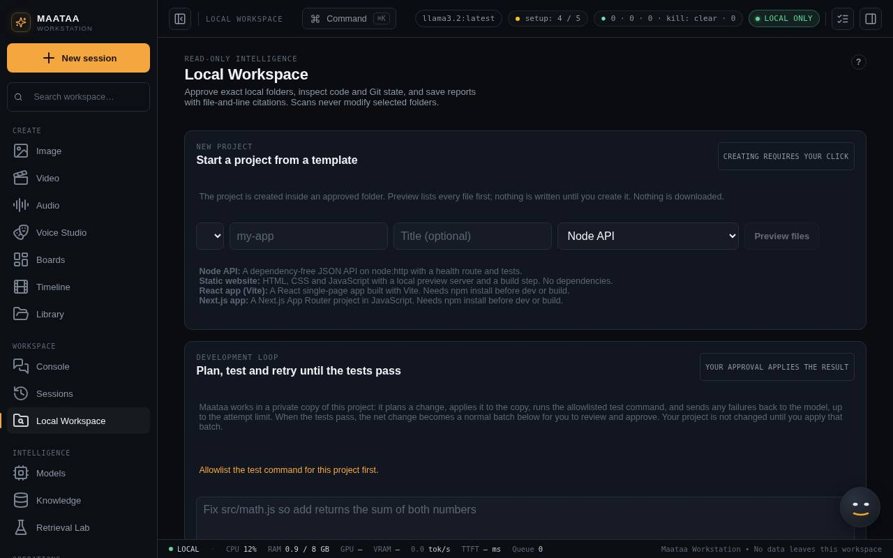
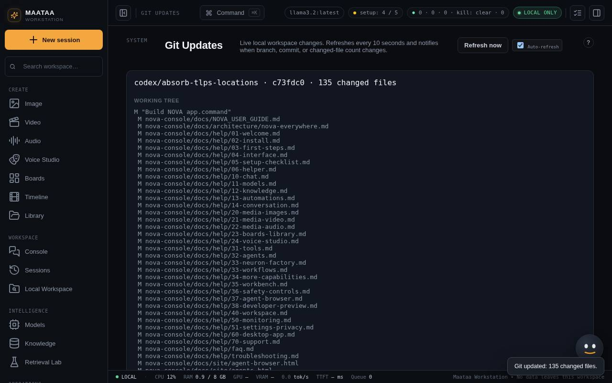

Local Workspace and projects
Approve a folder, let NOVA draft code changes you review and apply in one step, start new projects from templates, run install and dev, and keep a change looping until the tests pass.
Local Workspace lets NOVA read and change code on your computer, but only inside folders you approve, and only after you review each change.

Approve a folder
Press Choose folder…, pick a project folder and press Approve root. NOVA can then Scan folder, Search it and cite files as path:line. Revoke approval takes access away again. Nothing outside approved folders is ever read or written.
Code changes
NOVA plans changes only with a model that passed its coding checks: open Models and press Qualify for coding first (Models). Models of 3.2B parameters or smaller can only plan changes to a single file.
NOVA drafts changes from a chat request ("Create src/date.js that exports formatDate") or from JSON you enter. A change batch holds up to 50 operations:
| Operation | What it does |
|---|---|
| edit | Replaces one exact piece of text in an existing file |
| create | Adds a new file; it must not exist yet |
| delete | Removes an existing file |
| rename | Moves a file to a path that does not exist yet |
- Paths must stay inside the approved folder. Symbolic links and anything in
.git,node_modules,dist,build,target,.next,coverageor.cacheare refused. - Validate entire batch tries the whole batch on a copy, so your folder is untouched until you approve.
- Apply atomically writes every operation or none. Roll back batch puts every file back; it refuses if you edited an affected file afterwards.
- Plans are limited to 2,048 tokens by default. Set
NOVA_PLAN_MAX_TOKENS(up to 8192) beforenpm startfor bigger plans. Small, named changes work best.
Start a new project
New project builds an app from a template in an approved parent folder:
| Template | What you get | Install needed |
|---|---|---|
| Node API | JSON API on Node's own HTTP server, with a health route and tests | No |
| Static website | HTML, CSS and JavaScript with a preview server and build step | No |
| React app (Vite) | React single-page app | Yes |
| Next.js app | Next.js App Router project | Yes |
Preview files lists what would be written. Create project builds it in a hidden staging folder, runs git init on main, and moves it into place in one step, then approves the new folder. If your git name and email are set, NOVA makes a first commit.
Install packages and run the dev server
Commands only run after you approve an allowlist for the project.
- install runs
npm ciornpm install. It needs Settings → Allow network access. Package install scripts are skipped unless you tick allow install scripts. - dev runs the project's
dev(orstart) script on127.0.0.1, streams the log and shows the address. Stop dev server ends it; quitting NOVA stops them all.
Development loop
Describe a change, pick a local model and up to 5 attempts, and press Start loop. NOVA works on a private copy: it runs the tests, asks the model for a plan, applies it, runs the tests again, and feeds failures back until they pass. The result becomes a normal change batch for you to review; nothing changes in your folder until you apply it. Cancel loop stops it at any time. The project's test command must be allowlisted, and the model must have passed Qualify for coding.
A change applied after its checks passed, or a loop that ends with passing tests, completes step 5 of the setup checklist.
Git Updates
Git Updates (System group) shows the branch, last commit and changed files of the current workspace, refreshing every 10 seconds. Untick Auto-refresh to pause it.
The Git workflow panel in Local Workspace works on an approved project, one reviewed step at a time: Create branch or Switch branch; tick files and Stage selected files and create draft; confirm you reviewed the exact staged files, then Create commit. Pushing needs Prepare push review, Review exact push and Push reviewed commit, so nothing is pushed without you. Prepare PR draft writes a pull request description for you to copy.
